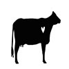

Welcome
We are a non-profit organization focusing on animal welfare and ending animal cruelty through the dairy, meat, cosmetic and fashion industries. We began our journey in 2019, with founder of our group Megan Shoaf. Megan has been a dedicated animal rights activist and studied conditions of factories. She has also participated in a plant-based diet and vegan lifestyle since 2015.
Since our start, we have been passionate about researching, teaching, inspiring, and learning.
This past year has been hard on everyone with the COVID-19 pandemic, but there are have also been especially devestating incidents concerning animals. In 2020 alone, on top of the billions of animals that are slaughtered for human consumption, over a million farm animals died in barn fires.
Now more than ever they need our help.
We have provided links to some other animal rights based webpages in hopes of inspiring research and change. Thank you for your support!
Peta
For All Animals
Human Animal Bond Research Institut